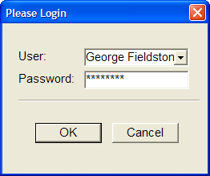

Objects - Learning Xbasic
So far you have learned about Xbasic variables and been introduced to using functions and expressions in Xbasic commands. Another important concept for understanding how to write Xbasic commands is an object.
All the parts of your applications written in Alpha Five are objects or distinct entities. An object is a part of Alpha Five that has properties (or characteristics) and methods (or scripts that do something to or with an object).
For example, tables, databases, forms, browses, reports, scripts, and even the Alpha Five program itself are all objects.
You may have noticed that properties of an object are like variables. They are storage locations that hold variable data values. They are, in fact, variables that belong to and describe a specific object. In the same way, methods are like scripts. Methods are pre-named scripts that execute certain actions.
Alpha Five Forms and Browses are some of the objects that you will use in Alpha Five. So they have properties and methods like any other object. Setting the properties and defining the Xbasic commands that are executed by the methods are the primary means of creating a custom application in Alpha Five. Now, you will look a little closer at an Alpha Five object a form. You will look at the properties and methods used to build the first form of the Phone Messages application that is included in the sample databases with Alpha Five. The initial form when the Phone Messages application is started is the Sign In form shown in Figure 20.
Figure 20
When the Please Login button is clicked on the Sign In form, another window appears with a prompt to enter a user ID and password as shown in Figure 21.

Figure 21
|
The "Please Login" window shown in Figure 21 is not a form object, but a window created by an Xbasic Xdialog command. Xdialog is a set of Xbasic commands that you can use to create pop-up windows to interact with users by displaying data or prompting users for information. The Xdialog component of the Xbasic language is covered in detail in the Learning Xdialog book that is part of the Alpha Five documentation set. |
After a successful login, the form then appears as shown in Figure 22. You can see in comparing Figures 20 and 22 that the information that appears on the form changes depending on the users interaction with the form. And the pop-up window in Figure 21 appears only after the Please Login button on the form in Figure 20 is clicked.
All of the changes and sequence of actions that occur as this form changes are happening because either the properties of the form object are being changed or methods of the form object are being invoked (run).
In fact, many of the changes to the form shown in Figure 20 and Figure 22 are the result of changes to the properties and methods of sub-objects on the form object.
|
A sub-object is an object that is part of another object. An object, by definition, always has a collection of properties and methods that determine the characteristics and capabilities of that object. If you read the previous sidebar that used a car as an example of an object, you can think of an engine as an example of a sub-object that is part of a car object. The engine is an object itself (as are all sub-objects) and has its own properties and methods. For example, an engine might have a property named cylinders. And it might have a method named "Increase RPM (revolutions per minute)." Now an engine object can exist on its own. It does not have to be part of a car to have its own properties and methods. (Of course, you can't do much with an auto engine that's not in a car.) But, an engine object can also become part of a car object definition. When we define a car object by defining its properties and methods, we can also define sub-objects that are part of that car object. So our car object specification can be expanded to include a sub-object of type Engine as shown below. A partial Engine object specification is also shown.
An engine object exists within the car object. A method of a parent object may invoke a method of a sub-object (or child object). For example, car.accelerate(50) causes the engine.increase RPM(1000) method to execute. | |||||||||||||||||||||||||||||||||
Another term for a sub-object is child object. And, as you might expect, an object that includes or incorporates child objects is sometimes referred to as a parent object.
The Sign In form in Figures 20 and 22 is an object. It is a form object. (also referred to as an object of type form). All form objects have, by definition, the same set of properties and methods.
The way you set the characteristics of a particular forms properties and methods determines that forms appearance and functionality. This form also has numerous sub-objects. In fact, all the elements or controls that you place on a form using the Alpha Five Form Design commands toolbox are objects. For example, the Sign In form in Figure 22 has a design element that is a bitmap (graphic) object. The picture of the friendly smiling message taker is a sub-object of the form itself. All of the buttons, text elements, variables and frames used in this form (the forms controls) are objects themselves (and thus sub-objects of the form). And each of these objects has its own properties and methods.
Next